Ellie Therapy
Kids Center
Простір дитячої психоаналітичної терапії, де поведінка дитини розглядається як частина її внутрішнього світу, а не лише проблема, яку потрібно зупинити.
Робота ґрунтується на підходах Ф. Дольто, З. Фрейда, М.Кляйн та інших психоаналітичних традиціях.
ДЗЕРКАЛО ЗАПИТУ БАТЬКІВ
Ви відчуваєте, що з дитиною щось відбувається.
Тривога, замкнутість, агресія, ревнощі, мовчання або труднощі адаптації часто є не “поганою поведінкою”, а способом психіки повідомити про внутрішню напругу.
Терапія допомагає зрозуміти, що стоїть за симптомом, і поступово стабілізувати стан дитини.
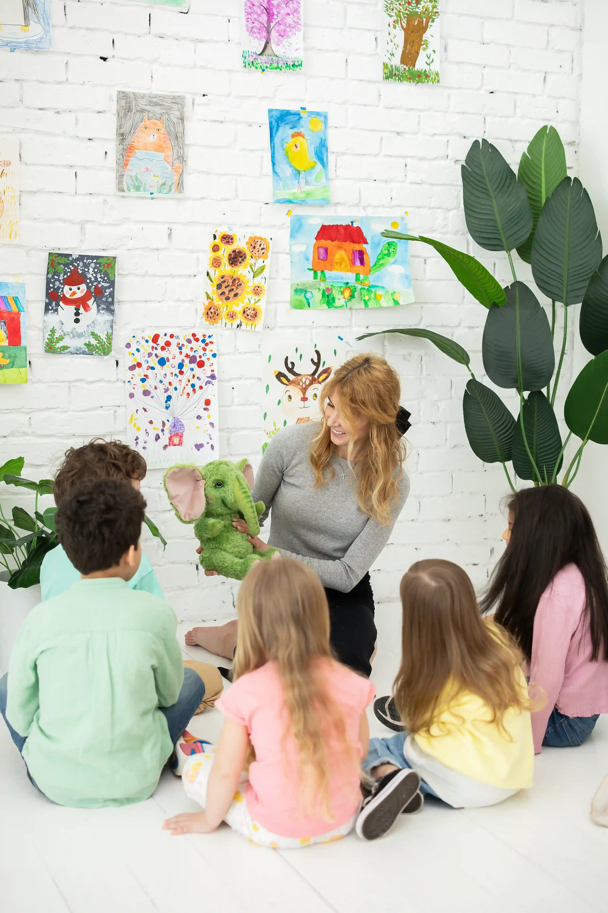
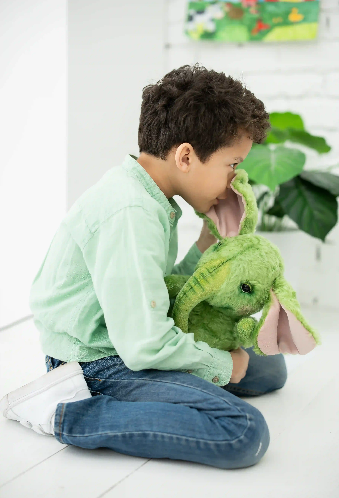
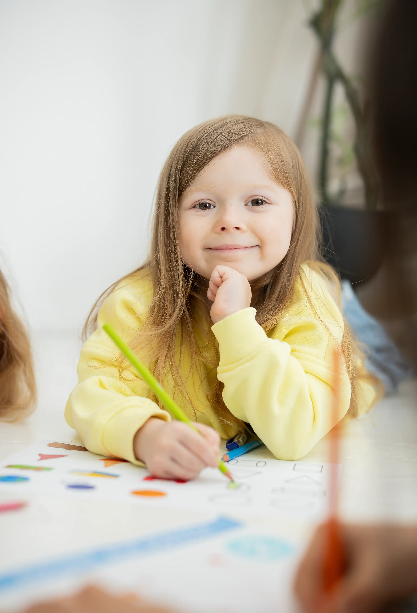
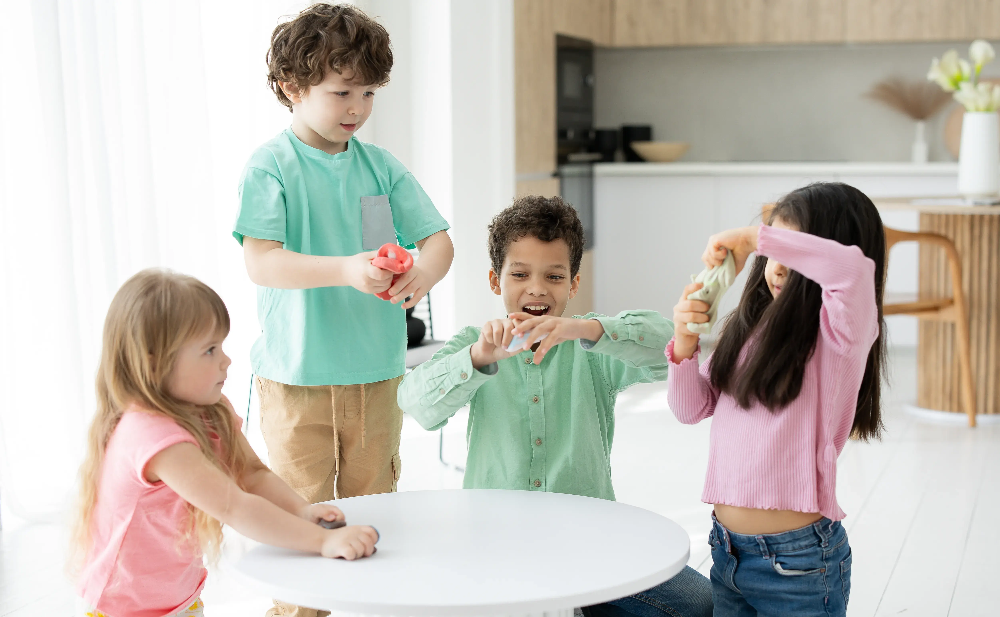
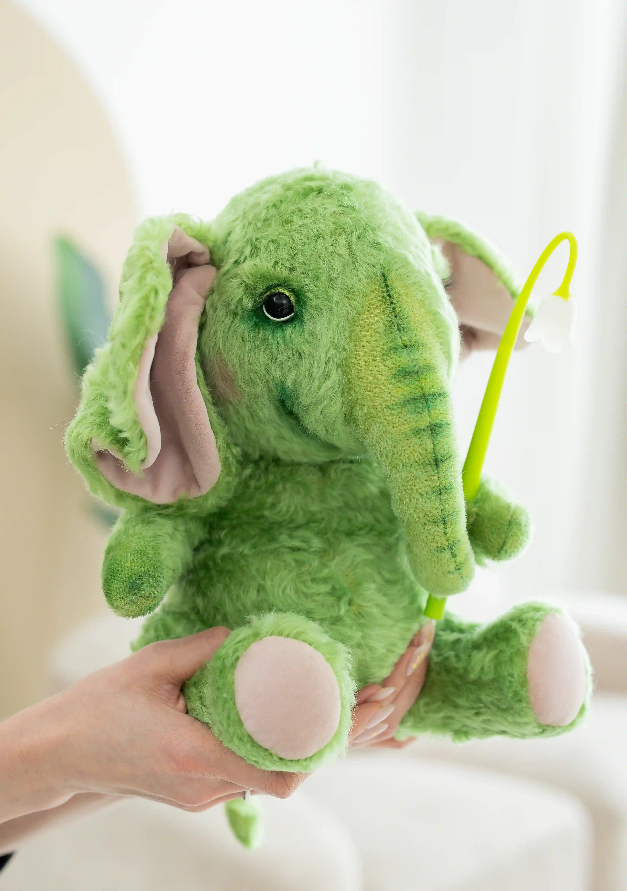
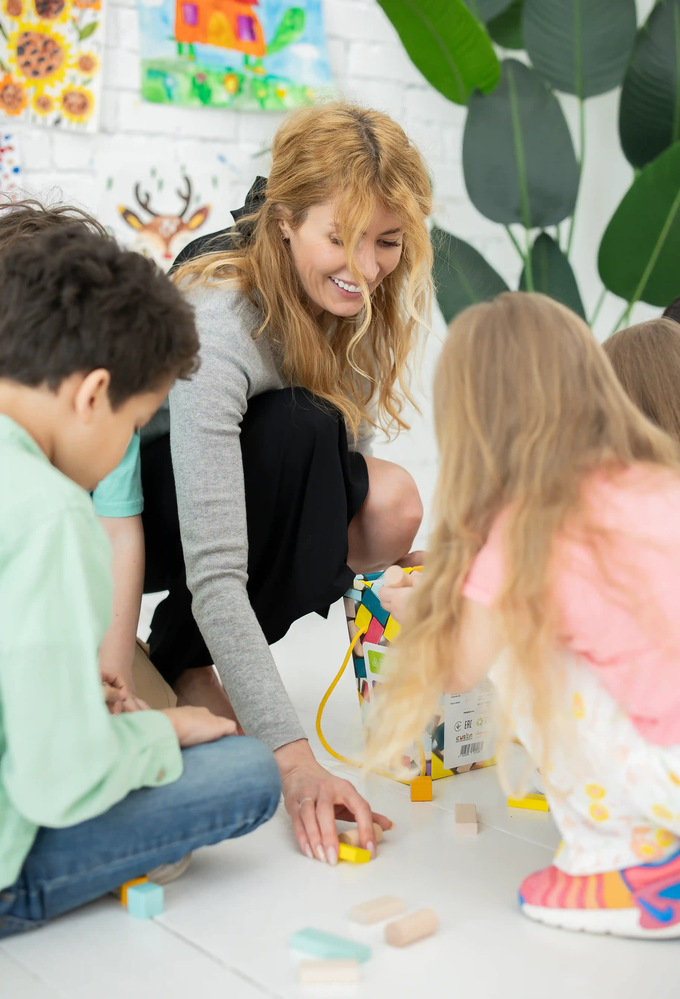
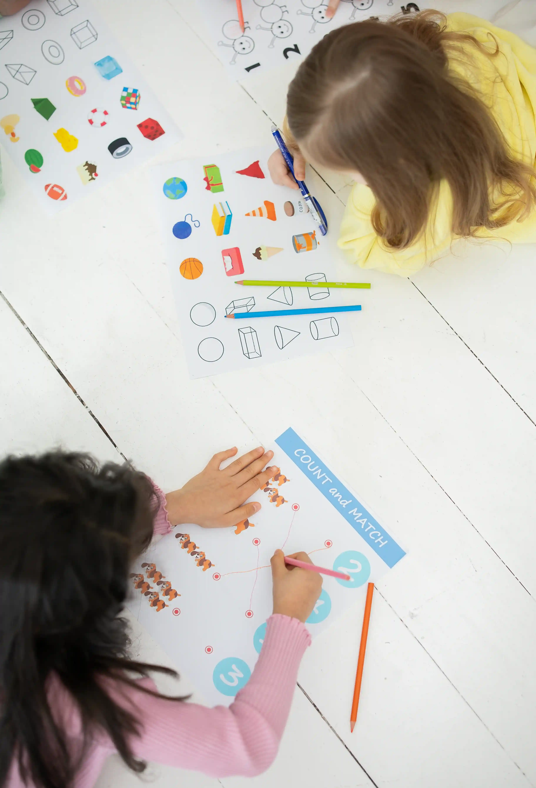

ЯК ВІДБУВАЄТЬСЯ РОБОТА
Гра як мова несвідомого
Дитина виражає досвід і переживання через символічну гру.
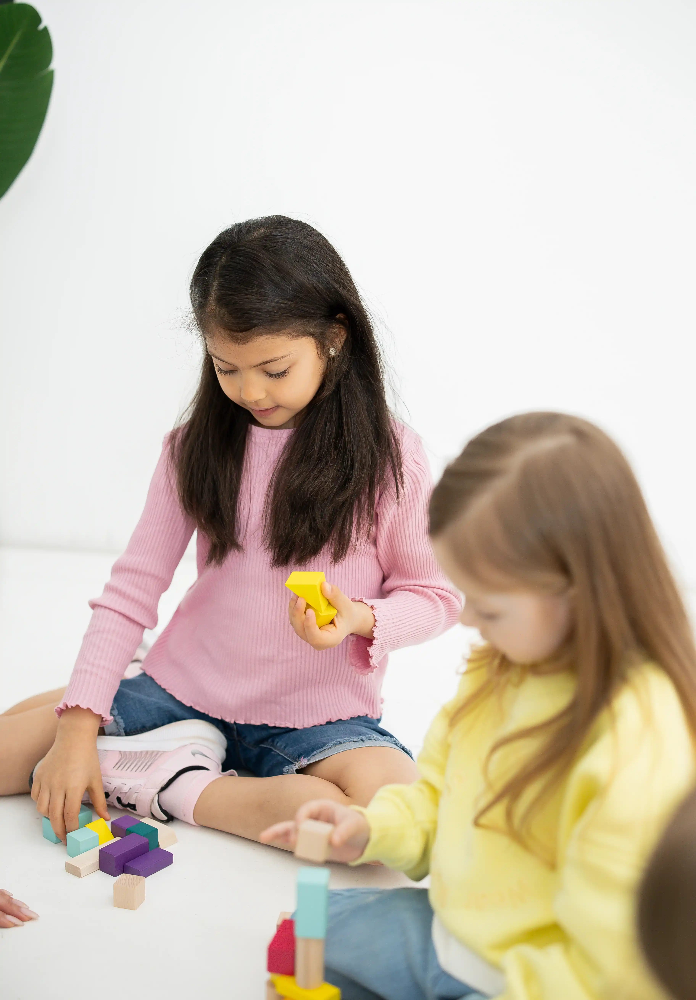
Малюнок і образ
Як спосіб вираження того, що ще неможливо сказати словами.
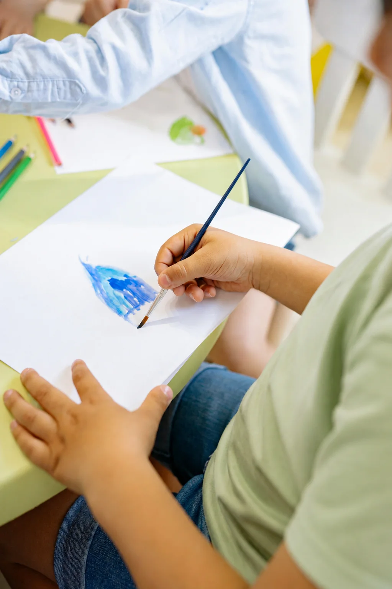
Стабільний терапевтичний сетинг
Постійність простору створює умови для внутрішніх змін.
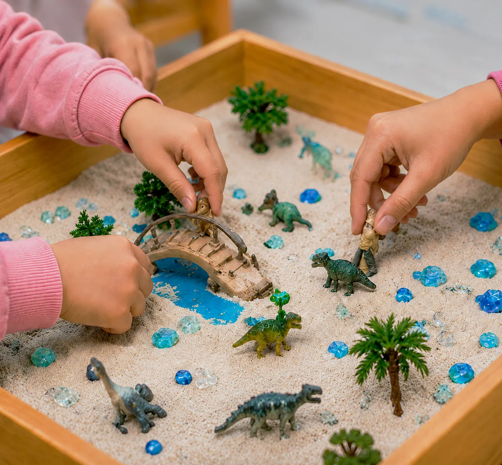
Робота з батьками
Розуміння дитини завжди включає розуміння її середовища вдома.
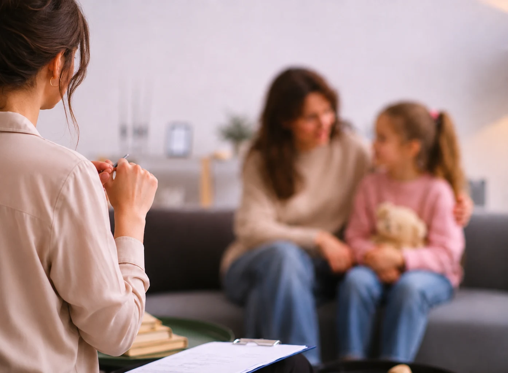
ПРОФЕСІЙНА ПОЗИЦІЯ
Симптом дитини розглядається як значуща форма вираження внутрішнього конфлікту.
Робота спрямована на розуміння цього процесу та його трансформацію.
Терапія підтримує розвиток дитини, її здатність до вираження, адаптації та стабільності.
ДЛЯ КОГО
{
font-size: 48px;
Zhanna
Mosiichuk
}
Психоаналітичний терапевт
Засновниця Ellie Therapy Kids Center
Психоаналітична підготовка в Міжнародному інституті глибинної психології. Член Української Асоціації Психоаналізу.
Понад 18 років роботи з дітьми, від раннього розвитку до клінічної практики. Організувала власний центр розвитку в Києві.
Практичний досвід роботи з дітьми включає:
● тривожні стани, страхи і нічні жахи
● селективний мутизм
● агресію і труднощі з імпульсивністю
● замкнутість і труднощі контакту
● розлади аутистичного спектру
● психосоматичні прояви
● труднощі адаптації після переїзду і втрати середовища
● реакцію на розлучення батьків і зміни в сім’ї
● затримку мовленнєвого розвитку
● гіперактивність і труднощі концентрації
Робота ведеться українською, російською та англійською мовами.